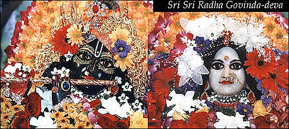
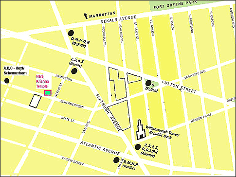

|
Type of centre: Temple
Contact details
Address: 305 Schermerhorn St
Brooklyn, NY 11217
USA
Ph: +1-(718)-8556714
Fax: +1-(718)-8756127
E-mail: ny_iskcon@yahoo.com
History and brief details of centre
Srila Prabhupada established the first New York temple in May 1966
at 26 Second Ave.
1967–1969 Temple moves to 61 Second Ave.
1969–1975 Temple moves to 439 Henry Street, Brooklyn and Sri
Sri Radha Govinda (big deities) were installed February 1972.
1975–1981 Temple moved to 340 W. 55th Street, Manhattan.The
facilities included a theatre, restaurant and guest house. Sri Sri
Gaura-Nitai , Lord Jagannatha, Subhadra, Balabhadra were installed.
In July 1976 Srila Prabhupada made his final, triumphant visit,
to New York and the first large Ratha-Yatra was celebrated, in his
presence.
1981–1983 W. 55th Street Temple was sold and Radha Govinda
moved to 846 7th Ave; Sri Sri Gaura-Nitai moved to Towaco NJ; Lord
Jagannatha deities moved to Lake Huntington Farm.
In 1983 the Temple moved to its current location at 305 Schermerhorn
St., Brooklyn. The Lake Huntington temple was closed and Lord Jagannatha
relocated to ISKCON Baltimore temple.
Deities: Sri Sri Radha Govinda (installed
February 1972)

Sri Sri Radha Govinda were presented to Srila Prabhupada in January
of 1972 by the Queen of Jaipur, Maharani Gayatri Devi, when he visited
the city for an ISKCON festival. After worshipping the deities on
the festival stage he sent these benevolent deities to reside in
the New York ISKCON temple. Jaipur is the home of Sri Sri Radha
Govindaji, the beloved deity of Srila Rupa Goswami. Thus, Srila
Prabhupada named the deities for the New York Temple, 'Radha Govinda'
in their honor.
Facilities
Bhaktivedanta Museum
When Srila Prabhupada made his final visit to New York City in July
1976, the temple was located at W. 55th St. It was an eleven storey
building near the theatre district of Manhattan New York. Srila
Prabhupada's rooms were established on the 11th floor, and set up
very nicely. After Srila Prabhupada's subsequent departure from
the material world in 1977, his rooms were maintained as they were,
and soon were transformed into a memorial exhibit. Gradually, the
exhibits grew with the addition of photos and memorabilia. The museum
shut in 1980 with the closure of the temple. In 1987 the museum
was re-established in its current location on the second mezzanine
level of the Radha Govinda Mandira.
Contact details: Ramabhadra Dasa
Ph: +1-(718)-8556714
Visiting Hours:
Sunday and Wednesday
6:00pm - 9:00 pm
or by appointment
Bhaktivedanta Library
In 1996, as a part of the Srila Prabhupada Centennial Celebrations,
the Bhaktivedanta Centennial Library was inaugurated on the first
mezzanine level of the temple as a service to Srila Prabhupada and
the devotees. The library's voluminous book collection includes
full sets of Srila Prabhupada's books, and many compliations of
his lectures and discussions. These can also be found in other languages.
Apart from a formidable archive section, the library has expanded
its collection to include books by the disciples and grand-disciples
of Srila Prabhupada as well as a large collection of audio and video
recordings of New York Temple bhajanas, kirtanas,
and festivals.
Contact details: Adideva Dasa
Ph: +1-(718)-8556714
Visiting Hours:
Sunday and Wednesday: 6-9pm
Tuesday and Friday 7-9pm or by Appointment
Govinda’s Lunch Club
Opened 1996. Let Govinda's cater for your event. Call (718)
875-6127 for details.
How to get there
The Hare Krishna Temple is located in downtown Brooklyn, minutes
away from Manhattan and Queens. It is easily accessible by car or
public transportation.
By Car
- From Brooklyn-Queens Expwy: Take Exit 29 for Tillary St. After
two lights, turn left onto Flatbush Ave. After three or four lights
turn right onto Nevins St. Turn right onto Schermerhorn St on
the second traffic light.
- From Manhattan and points west: Take the Manhattan Bridge into
Brooklyn. This Becomes Flatbush Ave. After three or four lights
turn right onto Nevins St. Turn right onto Schermerhorn St on
the second traffic light.
- From Long Island and points east: Take the Long Island Expwy
west and take the Exit for Brooklyn Queens Expwy. Take BQE West
and get off on Exit 29 for Tillary St. After two lights, turn
left onto Flatbush Ave. After three or four lights turn right
onto Nevins St. Turn right onto Schermerhorn St on the second
traffic light.
By Subway
- Take the A,C,G trains to Hoyt-Schermerhorn St
- Take the B, D, M, Q, R trains to Dekalb Ave
- Take the 2, 3, 4, 5 trains to Nevins St
- Take the LIRR to Atlantic Avenue

< Back · Top
^
|
|